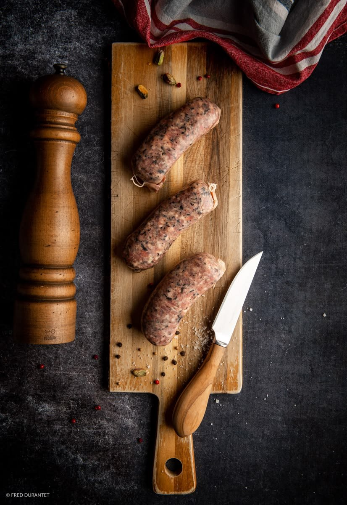
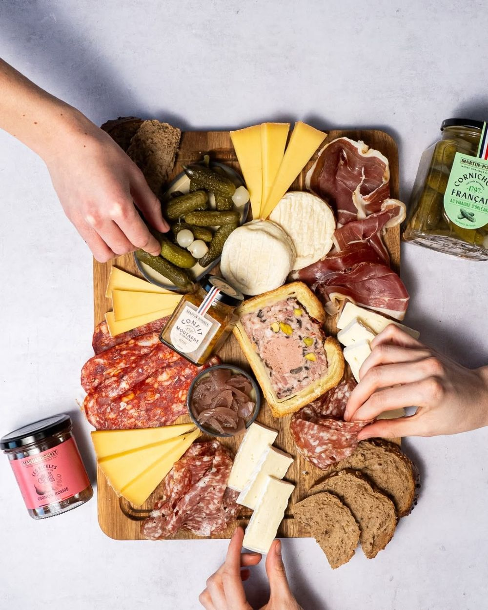
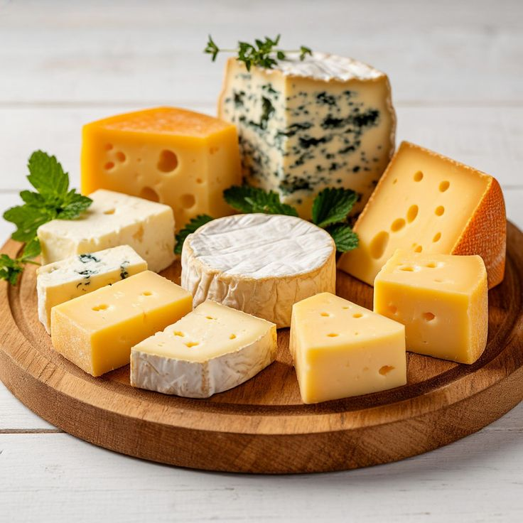
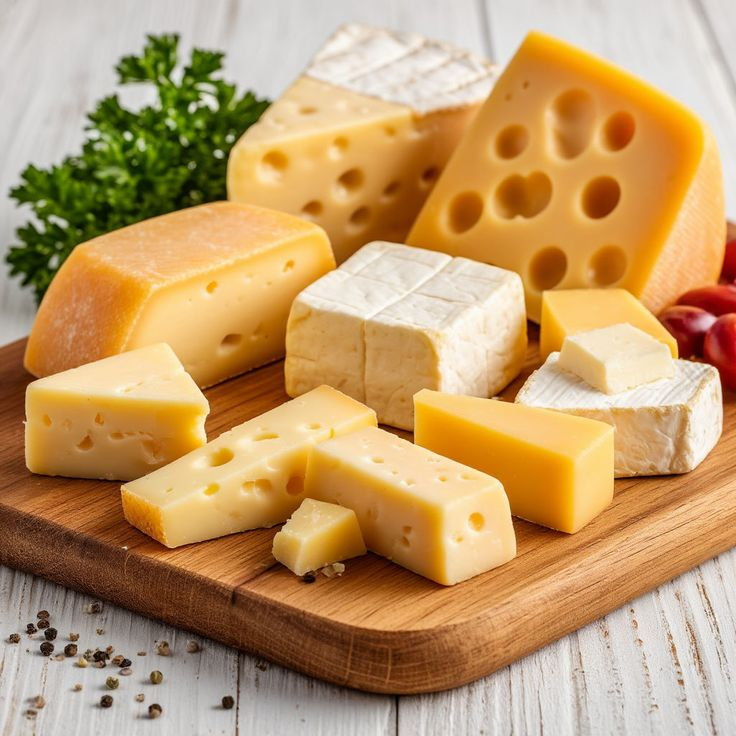
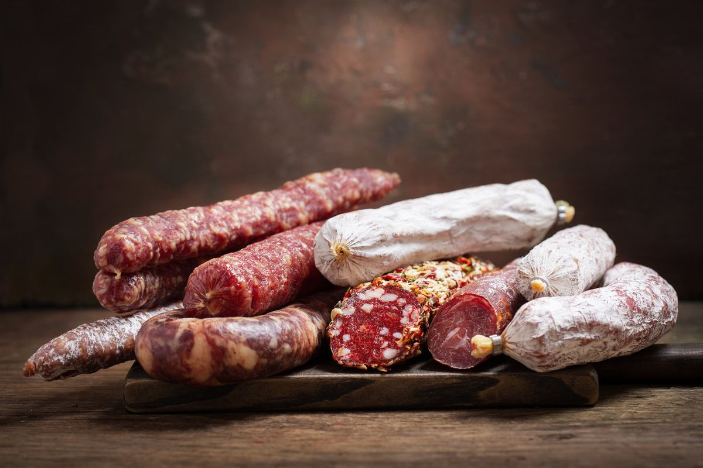

Chez Bon Appetit, on choisit, on tranche et on emballe avec soin ce qui fait un vrai repas : un jambon, une terrine, un chèvre bien fait, un bleu qui a du caractère.
Passez au comptoir, demandez conseil, repartez avec de quoi composer votre table, pour un déjeuner en semaine comme pour un dimanche qui s'étire.


Les plateaux de charcuterie
Des pièces choisies pour se répondre : le tendre, le fumé, le poivré, le croquant du cornichon pour finir de convaincre.
Plateaux sur commande : passez au comptoir pour les tailles et les tarifs.


La fromagerie
Du plus doux au plus affirmé, des fromages de France à goûter, à comparer, à emporter entiers ou à la coupe.
- Pâtes molles
- Camembert, brie, coulommiers.
- Pâtes pressées
- Comté, cantal, saint-nectaire.
- Chèvres
- Frais, mi-secs ou bien affinés, en bûche ou en crottin.
- Bleus
- Roquefort, fourme d'Ambert, bleu d'Auvergne.



À emporter, à offrir, ou à poser au milieu de la table.